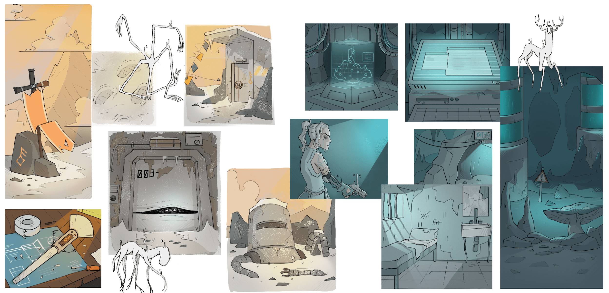
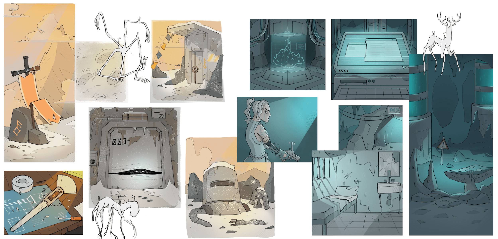

Kryome is a hybrid exploration and narrative board game. The purpose of the game is to reconnect to the network the shelters where the few humans who survived a post-apocalyptic event have stabilized, trying to overcome the pitfalls that populate the world of Kryome. The game aims to raise awareness on the issue of internet connection and how many people in the world do not have free access to this technology, which offers several advantages that we too often take for granted. In fact, the board game takes advantage of its hybrid nature composed by a physical part, a board game, and a digital one, a web app, to rise awareness on the matter. In order to proceed in the adventure, players must use the web app offline, without any possibility to connect with the outer world exactly like the protagonists of Kryome: the connection will be restored only at the end of the adventure.
Role
Art director, UX designer, Character/Environment designer, Packaging designer, Play tester
Softwares used
Photoshop, Illustrator, Indesign, Atom, Figma
Collaborators
Elettra Panepinto, Jessica Moreschi, Tancredi Pelà, Yousef Taffal, Xuerong Cai

 

(only for smartphones)